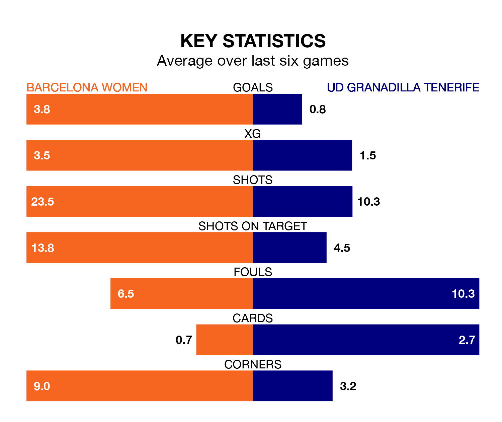

Barcelona Women are heavy favourites to keep all three points at home in Sunday lunchtime's kick-off against UD Granadilla Tenerife.
Barcelona, who sit top of Liga F with 19 games played, are priced at 1.0 to seal victory at Estadi Johan Cruyff.
Sitting eight places and 34 points behind them in the table, Granadilla Tenerife are 20.5 to win with *Betting Company*, while the draw is at 12.2.
With 82 goals in 19 games so far this season, Barcelona are the league's highest scorers with 4.3 goals per game. And they are conceding fewer than average, letting in five goals at a rate of 0.3 per game.
Granadilla Tenerife, meanwhile, are below average scorers, with 1.2 goals per game, compared to a league average of 1.6. They have conceded 1.5 goals per game.
In Caroline Graham Hansen, the home side have the league's sharpest shooter so far this season. She has notched 15 goals in 17 appearances.
Her goal rate of one every 81 minutes is much quicker than that of Jassina Blom, the visitors' top scorer with a goal every 235 minutes, and a total of five goals in 17 games.
Barcelona are in fantastic form in Liga F, with five wins and a draw from their last six games.
With no wins and four draws over that period, Granadilla Tenerife's form is much worse – they have taken four points from 18, compared to Barcelona's 16.
In the last 10 years, Barcelona and Granadilla Tenerife have played each other on 16 occasions. Barcelona won 14 of them and Granadilla Tenerife two.
On average, Barcelona scored 3.2 goals and Granadilla Tenerife 0.4 in those matches.
Their last meeting was on December 17, when Barcelona won 2-0 away.
Barcelona's last match was on March 10, a 7-1 win against Real Sociedad Women, with Salma Paralluelo Ayingono (four), Alexia Putellas Segura, Graham Hansen and Victoria López getting the goals for Barcelona.
Granadilla Tenerife drew 1-1 with Villarreal Women last time out, on March 9, with Claudia Roldán Blanco on the scoresheet.
Updated: 15:10 (UTC), 15/03/24